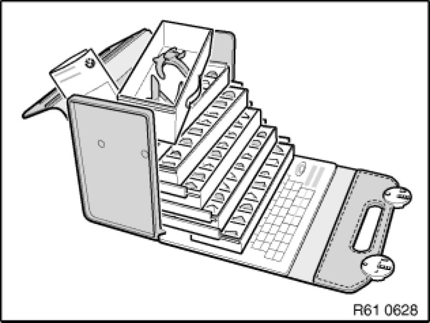
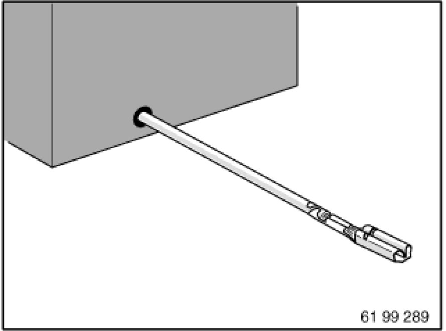
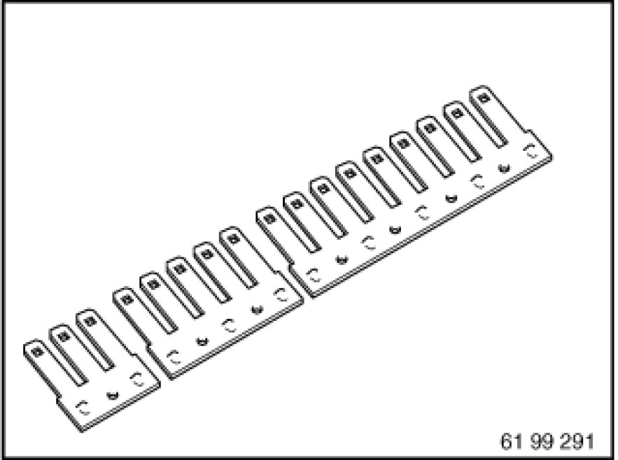

Installing Fan Type Connector for Retrofitting/Repairs
61 13 ... - Installing fan connector for retrofitting/repairs

Special tools required:
- 61 9 040 61 9 040 Set of Tools for Repair Kit IV
- 61 9 041 61 9 040 Set of Tools for Repair Kit IV
- 61 9 042 61 9 040 Set of Tools for Repair Kit IV

Note:
The repair range IV for vehicle electrical system contained the required special tools and individual parts for retrofitting and repair work with the aid of fan connectors.
The case can no longer be ordered. Order individual parts for wiring harness repair through BMW Parts Service.
- Refer to Service Information:
SI 02 04 07 341
Special tools:
- special tool 61 9 040 61 9 040 Set of Tools for Repair Kit IV
Choose contact sleeve (up to 4 mm2) in accordance with wire cross-section.
Alternatively:
Choose contact sleeves (up to 2.5 mm2) for fan connectors.

Cut through wire loop in wiring harness at established point.
Strip insulation from both wire ends.
Refer to repair instructions:
Cutting to length and stripping insulation from cables 61 13 ... Cutting to Length and Stripping Insulation From Cables
Crimp contact sleeves on both wire ends.
Refer to repair instructions:
Crimping on stop parts 61 13 ... Crimping Stop Parts
Note:
If using repair kit for contact sleeves, refer to repair instruction:
Butt connector for repairing a plug connection 61 13 ... Butt Connector For Repairing A Plug Connection.

Crimp connecting cable for retrofitting likewise with contact sleeve.

Cut required number of poles to length for fan connectors.
Special tool 61 9 041 61 9 040 Set of Tools for Repair Kit IV (hand crimping tool) in conjunction with 61 9 042 61 9 040 Set of Tools for Repair Kit IV (matrix) are used for pushing contact sleeves onto fan connectors.
Refer to repair instructions:
Special tools for wiring harness repairs Tools and Equipment.
Unlock special tool 61 9 041 61 9 040 Set of Tools for Repair Kit IV:
Squeeze grips (1) lightly and push unlocking lever (2) in direction of arrow.
Or:
Compress handles as far as they will go, tool unlocks automatically.
Insert prepared fan connector (3) in special tool 61 9 041 61 9 040 Set of Tools for Repair Kit IV / 61 9 042 61 9 040 Set of Tools for Repair Kit IV.
Attach wire with contact sleeve to fan connector.
Press crimping tool together and slide contact sleeve firmly home.
Important!
Once contact sleeves have been pushed on, they should not be detached again from the fan connector or reused.
Push on further contact sleeves for potential branching.

Installation in wet area (engine compartment, wheel arch):
Apply sealing compound on both sides and press into contacts (1).
Fit shrink-fit hose and heat up with hot air blower (2) (approx. 250 °C).
Note:
Ensure that fan connector has sufficient contact surface on mounting point.
Do not heat shrink-fit hose on edges of fan connector too strongly, risk of cracking.
Allow shrink-fit hose to cool down until hand-warm. Then press sealing material again into contacts and onto edges of fan connector.
If necessary, carefully heat shrink-fit hose again.
Installation in dry area (interior, luggage compartment):
Slide assembled fan connector into insulation housing until it locks into place.